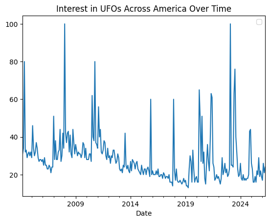
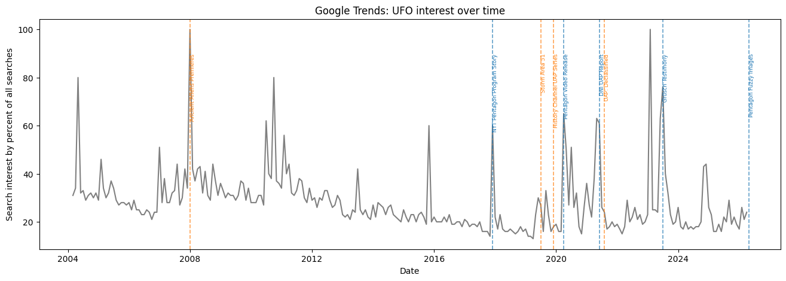
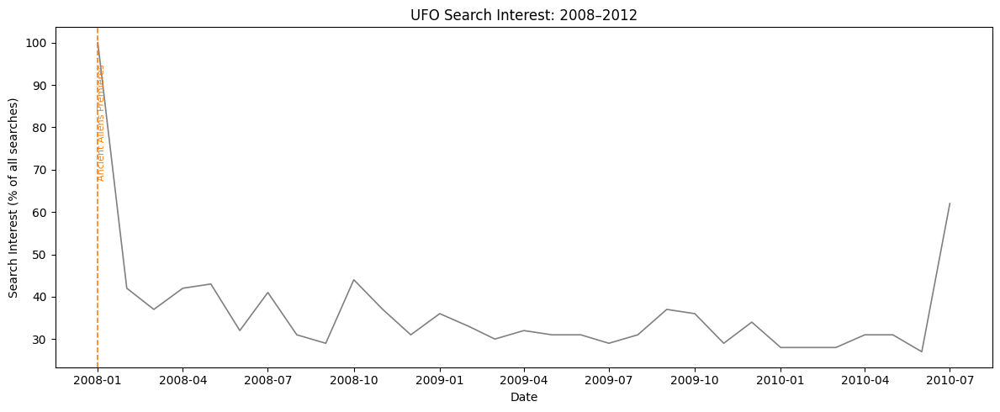

import pandas as pd
import numpy as np
import matplotlib.pyplot as plt
import geopandas as gpdGoogle Trends Data Analysis
Yesterday, the Pentagon released a series of fuzzy images, sparking speculation, riddicule, and tin-foil hats? The U.A.P’s which are colloquially known as UFOs, are part of the Trump administration’s commitment to “transparency” according to a report by the New York Times.
UFO’s are the object of fascination for many Americans. Area 51, outside of Las Vegas, is a tourist destination where fascination for the unknown interstellar is made even more intriguing by government mistique. Shows like the X files allow watchers to fantasize about what mysteries space might hold.
The government’s release of files containing supposed UFOs marks the first time that the executive office has engaged substantively on the issue since 2017, when the New York Times first reported that there was a government program to track UFOs.
In this analysis, I’ll trace how trends in google searches change with different sightings of strange objects and government engagement with UFOs. The question is whether this engagement adds fuel to the fires of fictional foreign-objects, or whether Americans seem organically concerned about UFOs?
ufo = pd.read_csv('data/time_series_US_20031231-1900_20260508-1941.csv',
skiprows=2,
index_col=0,
parse_dates=True
)
#import google trends dataThe google trends data describes the interest in UFOs over time in America– tracing the percentage of searches for a topic as a percentage of all searches at that time and location. Put otherwise, the trend line should spike when more people are interested in a subject. We might imagine happening as a result of UFO sightings, or important government engagement with the issue of UFOs.
#summary
ufo.head()
#the daset returns a date and the index number, or the percent of searches for UFOs out of the percentage of all searches | 33 | |
|---|---|
| 2004-02-01 | |
| 2004-03-01 | 31 |
| 2004-04-01 | 34 |
| 2004-05-01 | 80 |
| 2004-06-01 | 32 |
| 2004-07-01 | 33 |
#plotting the trends over time:
ts_plot= ufo.plot()
ts_plot.set_title('Interest in UFOs Across America Over Time')
ts_plot.legend('')
ts_plot.set_xlabel('Date')
plt.show()
#a list of different pop culture moments and government engagement with UFOs to see how the spikes differ by cause (generated w. help of AI)
events = {
# Government/Disclosure — blue vertical lines
'2017-12-01': ('NYT Pentagon Program Story', 'gov'),
'2020-04-01': ('Pentagon Video Release', 'gov'),
'2021-06-01': ('DNI UAP Report', 'gov'),
'2023-07-01': ('Grusch Testimony', 'gov'),
'2026-05-01': ('Pentagon Fuzzy Images', 'gov'),
# Pop Culture — orange vertical lines
'2008-01-01': ('Ancient Aliens Premieres', 'pop'),
'2019-07-01': ('Storm Area 51', 'pop'),
'2019-12-01': ('History Channel UAP Series', 'pop'),
'2021-08-01': ('UAP: Declassified', 'pop'),
}
colors = {'gov': '#1f77b4', 'pop': '#ff7f0e'} # blue and orange#plotting the two graphs
fig, ax = plt.subplots(figsize=(16,5)) #subplots defines little plots
ax.plot(ufo.index, ufo.values, color = 'grey')
for date_str, (label, category) in events.items(): #for each of the dates in the list defined above
date = pd.to_datetime(date_str) #convert to datetime object
ax.axvline(date, color=colors[category], linestyle = '--', alpha = 0.7, linewidth=1.2) #define color, etc.
ax.text(date, ufo.values.max()*0.90, label, #labeling values for the smaller graphs and more stylistic details-- asked for help styling these because I was having trouble reading the text
rotation=90, fontsize = 6.5, va = 'top',
color = colors[category])
ax.set_title('Google Trends: UFO interest over time')
ax.set_xlabel('Date')
ax.set_ylabel('Search interest by percent of all searches')
plt.show
The analysis shows that interest in UFOs over time remains relatively low, unless there are significant events that would pique people’s interest. However, after significant interest in a UFO sighting, the trendline goes down more slowly, meaning that we expect some lasting effects of UFO-related events on people’s interest in UFOs over time– even over years.
Additionally, the spikes demonstrate that government reports and pop-culture moments, like the premier of the movie “Ancient Aliens” seem to drive significant online traffic about UFOs. However this doesn’t seem any more or less significant than the release of government data.
Therefore as the government has once more engaged in the subject of UFOs, the public may be watching.
Follow Up
A follow-up question from this graph might be what drives the more sustained interest that shows up after the particularly high spikes. To answer, it might be helpful to narrow into a time frame to minimize the noise that might inherently exist in the graph, differentiating events like UFO sightings from anomalous trends in how people use search engines.
To do this, I will investigate the area after the spike in 2008 fom 2010 where the next spike occurs.
#follow up code:
narrowed = (ufo.index >= '2008-01-01') & (ufo.index <= '2010-07-01')
ufo_new = ufo[narrowed]
#replotting:
fig, ax = plt.subplots(figsize=(12, 5))
ax.plot(ufo_new.index, ufo_new.values, color='grey', linewidth=1.2)
#adapting earlier code to replot:
for date_str, (label, category) in events.items(): #make sure labels are still present
date = pd.to_datetime(date_str)
if pd.to_datetime('2008-01-01') <= date <= pd.to_datetime('2012-01-01'):
ax.axvline(date, color=colors[category], linestyle='--', linewidth=1.2)
ax.text(date, ufo_new.values.max() * 0.95, label,
rotation=90, fontsize=8, va='top', color=colors[category])
ax.set_title('UFO Search Interest: 2008–2012')
ax.set_xlabel('Date')
ax.set_ylabel('Search Interest (% of all searches)')
plt.tight_layout()
plt.show()
From this graph, we can see that although the general trend is that sightings decrease after 2008, there are a few spikes that seem to drive the variation in the graph. Googling these results can tell us that a few of these spikes are associated with supposed UFO sightings.
In July of 2008, for example, there were apparently sightings in Buck’s county, and google reports that there were approximately 138 sightings around that time. MUFON the mutual UFO Network looks into the validity of claims of UFO sightings, noting that most are man made.
After this, in October 2008, multiple UFO sightings were reported, most notably in North Central Texas, where residents reported strange lights on October 23, 2008, following a major wave of sightings earlier that year. These reports, often describing oval-shaped objects, were accompanied by sightings of military F-16 jets in the area. Other 2008 reports are documented by the National UFO Reporting Center.
Therefore even as America and other countries have launched more objects into space, it’s surprising that trends can be consistently linked to sightings or pop culture events.
This is important as we consider the actions of the Trump administration in releasing new data regarding UFOs. On the one hand, increasing public access to information about space objects may decrease unsubstantiable skepticism about UFOs. However, given the trails in the spikes of both pop culture and government engagement around UFOs, it seems as though this new release of information may simply serve to increase speculation.
The Google Trends Data suggests that as information about UFOs increases, thir popularity does not decrease. This runs counter to the trend of scientific discovery where we are learning more about the universe, and becoming significantly better at identifying what might exist beyond our atmosphere, we should rely less on pop-culture and less substantive definitions like “UFOs.”